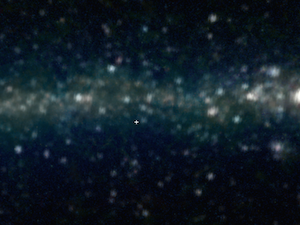
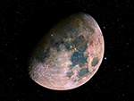
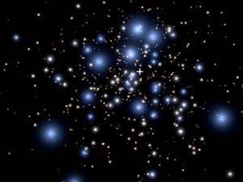
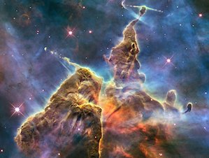

|
Research |
Outreach |
||
|---|---|---|---|
| Milky Way Bones |
ADS All Sky Survey
ADS All Sky Survey:See the map of literature in the sky.
|
Cosmic Wonder |
More Stories...
Giant Touchscreens
WWT on Giant Touchscreens: Learn about how the office of public outreach at STScI are displaying WWT on giant touchscreens.
|
|
K12 |
University |
||
|
 Learn how educators use WWT to teach moon phases.
WWTA Moon Phases |
More Stories...
Star Clusters
WWT and Star Clusters: Learn about how WWT is being used to show star cluster simulations.
|
Grad Student Learning Modules |
More Stories...
Bucknell: Astro 101
Labs in Astro 101:Learn about WWT Astronomy labs at Bucknell.
|